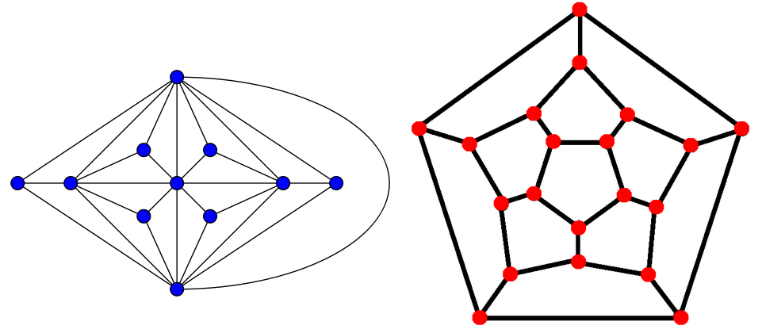
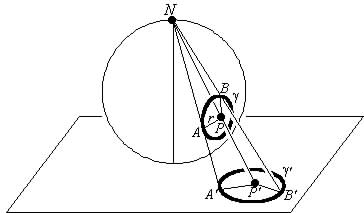
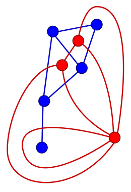

A planar graph is a graph that can be drawn on a plane without its edges crossing. The following graphs are planar:
{kind=link}

A graph that cannot be drawn on a plane in this way is non-planar. For example, the complete five-vertex graph is non-planar. (Try it :) )
Drawing a Planar Graph on a Sphere¶
A graph can be drawn on a sphere such that its edges do not cross each other if and only if it is planar. To prove this, we use the following transformation:
{kind=link}

Place a sphere on a plane and consider the antipodal point to the tangent point on the plane (point N). Any line passing through this point will cover exactly one point on the plane and one point on the sphere. To prove the theorem, consider a planar graph drawn on the plane and project it onto the sphere. For each point on the plane, draw a line from N to that point and find its corresponding point on the sphere. If the point on the plane is a vertex, mark it as a vertex on the sphere; if it lies on an edge, mark it as a point on the edge; and if it belongs to a region, mark it as a point in that region on the sphere. This constructs a drawing of the graph on the sphere. Observe that the edges retain their continuity and clearly do not cross each other.
For the converse, we proceed similarly but ensure that point N does not lie on a vertex or edge. The region containing N becomes the infinite region surrounding the graph.
Euler's Theorem¶
Euler's theorem provides a relation for determining the number of regions formed in a planar graph. This theorem states that:
where ( f ) is the number of regions, ( e ) the number of edges, ( t ) the number of components, and ( n ) the number of vertices. In particular, for a connected graph, we have:
Proof¶
The proof of this theorem is not complicated at all, so it's good to first think about it yourself. If the graph is a forest, the statement holds because there is one region and we have: \(e = n - t\) But if it's not a forest, we remove one of the non-bridge edges that lies inside a cycle from the graph. The number of vertices and components remains unchanged, but the number of regions and edges decreases by exactly one. Therefore, if the statement holds for the new graph, it must have also held for the previous graph. We continue this process until we obtain a forest. Since the statement holds for forests, it must have held for all intermediate graphs including the original graph.
Dual Graph¶
A dual graph of a planar graph is constructed as follows: place a vertex in each region, then connect edges between the vertices corresponding to adjacent regions, as illustrated in the figure below:
{kind=link}

Note that the dual graph is also planar. Dual graphs can be useful in solving problems related to planar graphs.
Maximal Planar Graph
--------------
A maximal planar graph is a simple planar graph to which no more edges can be added while remaining simple and planar. A graph with more than two vertices
is maximal if and only if every face is bounded by three edges (i.e., its dual graph is 3-regular). In a maximal planar graph, we have:
.. math:: 3f = 2e
Substituting this into Euler's formula (the graph is clearly connected) yields:
.. math:: \frac{2e}{3} = e - n + 2
.. math:: \frac{e}{3} = n - 2
.. math:: e = 3n - 6
This proves that for any simple planar graph:
.. math:: e \le 3n - 6
.. math:: e = O(n)
This book is made by The Shaazzz contributors.
It is publicly available with cc-by-sa license.
Last updated at آوریل 19, 2025.
Rendered by Sphinx (4.3.2) and Minoo theme (Beta 0.9.7).